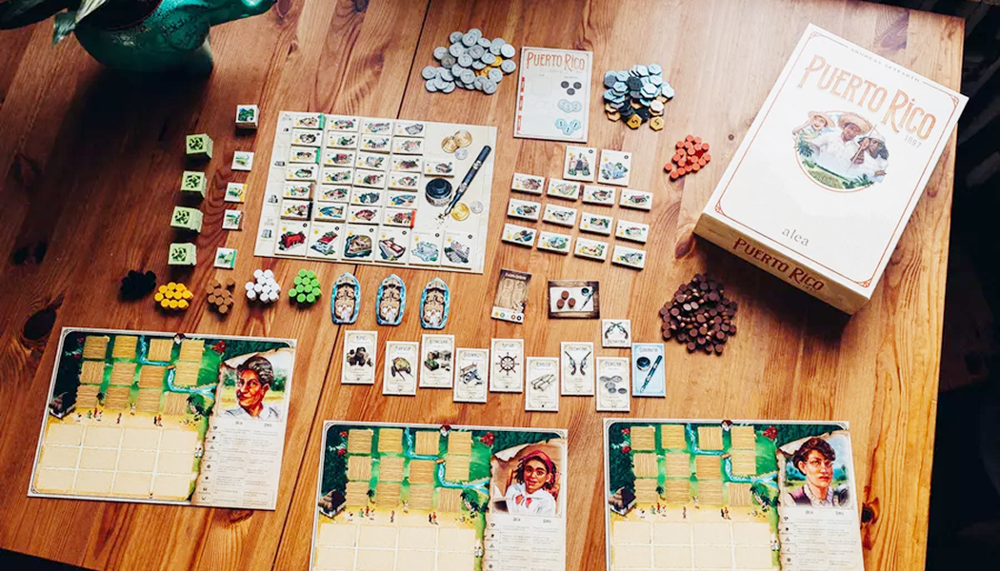
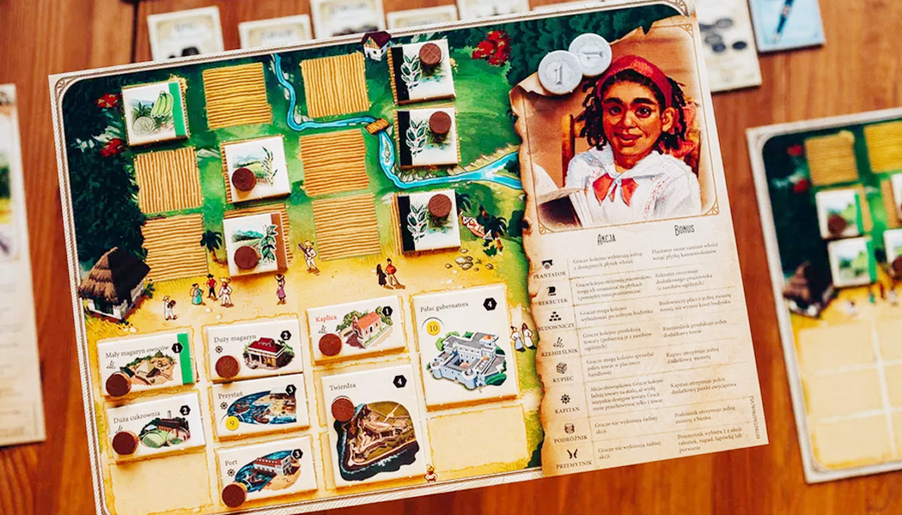

วิธีเล่น Puerto Rico 1897

Summary
เกม Puerto Rico 1897 มีธีมเกี่ยวกับการพัฒนาเศรษฐกิจและการค้าในช่วงปลายศตวรรษที่ 19 บนเกาะเปอร์โตริโก ซึ่งขณะนั้นอยู่ภายใต้การปกครองของสเปน แต่กำลังเข้าสู่ช่วงเปลี่ยนผ่านสู่ความเป็นอิสระ ผู้เล่นรับบทเป็นชาวเมืองที่พยายามสร้างความเจริญให้กับเกาะของตนเองผ่านการปลูกพืชผลสำคัญ เช่น ข้าวโพด น้ำตาล กาแฟ ยาสูบ และคราม เพื่อนำไปค้าขายและพัฒนาเมือง

Setup
บอร์ดกลาง
- วางเงินและไทล์ building ไว้ที่บอร์ดกลาง
- ทำกองคว่ำไทล์ไร่แล้วเปิดตามจำนวนผู้เล่น + 1
- ไทล์เหมืองวางไว้ข้างๆ ไทล์ที่เปิด
- แต้ม
- 2 คน: 65 แต้ม
- 3 คน: 75 แต้ม
- 4 คน: 100 แต้ม
- 5 คน: 126 แต้ม
- การ์ด Role
- 2 คน: 7 ใบ (Adventurer ออก 1)
- 3 คน: 6 ใบ (Adventurer ออก 2)
- 4 คน: 7 ใบ (Adventurer ออก 1)
- 5 คน: 8 ใบ (ใช้หมด)
- เรือ
- 2 คน: 4, 6
- 3 คน: 4, 5, 6
- 4 คน: 5, 6, 7
- 5 คน: 6, 7 ,8
- สินค้า (2 คนเอาออกชนิดละ 2)
- Trading House
- Work Register (วางคนงานตามจำนวนผู้เล่น)
- คนงาน
- 2 คน: 40 ตัว
- 3 คน: 55 ตัว
- 4 คน: 75 ตัว
- 5 คน: 95 ตัว
บอร์ดผู้เล่น
- ผู้เล่นคนแรกได้การ์ด Governor
- แผ่นเกาะ
- เงิน ตามจำนวนผู้เล่น - 1
- ไทล์ไร่
- 2 คน: 1st ผลไม้, 2nd ข้าวโพ้ด
- 3 คน: 1st ผลไม้, 2nd, 3rd, 4th ข้าวโพ้ด
- 4 คน: 1st, 2nd ผลไม้, 3rd, 4th ข้าวโพ้ด
- 5 คน: 1st, 2nd, 3rd ผลไม้, 4th, 5th ข้าวโพ้ด

Gameplay
ใช้ระบบ Lead & Follow โดยแต่ละรอบจะเริ่มจากผู้เล่นคนแรก (คนที่มีการ์ด Governor) ให้เลือก Role แล้วเล่น จากนั้นคนถัดไปตามเข็มก็เล่น Role เดียวกับที่ผู้เล่นคนแรกเลือก เมื่อเล่นครบทุกคน คนถัดไปตามเข็มก็จะได้เลือก Role ที่เหลืออยู่ แล้วคนอื่นๆ ก็เล่นตามเหมือนเดิม เมื่อทุกคนได้เลือกได้ Role หมดแล้ว ถือว่าเป็นการจบ 1 รอบ ให้วนการ์ด Governor ตามเข็ม แล้วใส่เงิน 1 บาทบนการ์ด Role ที่ไม่ถูกเลือก จากนั้นคือ Role ที่เลือกไป แล้วเล่นรอบใหม่เหมือนเดิม (คนที่เลือก Role ที่มีเงินก็จะได้เงินไปด้วย)
ผู้เล่นจะเล่นวนไปเรื่อยๆ จนเข้าเงื่อนไขจบคือ
- คนงานหมด
- แต้มหมด
- มีคนสร้าง Building ครบ 12 อัน
แล้วเกมจะจบในรอบนั้นเล่น (ทุกคนเลือก Role จนครบ)
Role
The Planter
เลือกไทล์ไร่ 1 ไทล์ จากที่เปิดอยู่ แล้ววางลงบนเกาะตัวเอง
ถ้าเลือกคนแรกจะได้เลือกเหมืองได้
เมื่อทุกคนเล่นครบจะรีไทล์ทั้งหมด
The Recruiter
หยิบคนงานทีละ 1 ตัว จาก Work Register จากนั้นเอาคนงานย้ายไปทำงานต่อได้ทันที (ต้องวางที่ Building ได้)
ถ้าเลือกคนแรกจะได้หยิบคนงานจากกองกลาง 1 ตัว
เมื่อหยิบหมดแล้วให้เติมตามจำนวนช่องของ building ที่ว่างของทุกคน ถ้าน้อยกว่าจำนวนคนให้เติมตามจำนวนคน
The Builder
ซื้อ Building (ราคามุมซ้ายล่าง, มุมบนขวาคือแต้ม) แล้ววางลงเกาะตัวเอง และถ้ามีเหมืองสามารถลดราคาได้ (ต้องมีคนงานด้วย) และต้องดูว่า Building นั้นสามารถใช้เหมืองลดได้กี่เหมือง แต่ละเหมืองลด 1 บาท
ถ้าเลือกคนแรกได้ลดราคา 1 บาท
สร้าง Builiding ซ้ำไม่ได้
The Craftsman
ผลิตสินค้าจาก Building และไร่ข้าวโพด เงื่อนไขจาก Building คือต้องมีไร่ตรงกับอาคาร เช่น ถ้าอยากได้ผลไม้ 2 ต้องมีไร่ผลไม้ 2 ไร่ และคนงานทำที่ Building ผลไม้ 2 คน ถ้ามีไร่เดียวก็จะได้แค่ 1 ผลไม้
ถ้าเลือกคนแรกจะได้หยิบสินค้า 1 ชิ้นจากสินค้าที่ผลิตได้ (เลือกแค่ 1 ชนิด)
ของมีจำกัด ถ้าสินค้าหมดต้องรอคนเอาสินค้าไปขาย
The Trader
สินค้าแลกเงิน
เลือกสินค้า 1 ชิ้น เอาไปขายแล้วได้เงินตามเลขที่บอกบนการ์ด เงื่อนไขคือขายได้ชนิดละชิ้น ถ้าเต็มแล้วถึงโละใหม่
ถ้าเลือกคนแรกได้เงินเพิ่ม 1 บาท (แต่ต้องขายได้)
The Captain
สินค้าแลกแต้ม
โหลดสินค้าลงเรือ โดยเลือกแค่ 1 ชนิด ซึ่งเรือแต่ละลำจะรับได้แค่ 1 ชนิด และรับสินค้าซ้ำกับเรืออื่นไม่ได้ เมื่อโหลดแล้วจะได้ 1 แต้มต่อจำนวนสินค้าที่โหลด เมื่อโหลดจนครบทุกคนต้องทิ้งสินค้าให้เหลือแค่ชิ้นเดียว
ถ้าเลือกคนแรกจะได้เพิ่ม 1 แต้ม (แต่ถ้าโหลดไม่ได้ จะไม่ได้โบนัสนี้)
ถ้าโหลดได้ บังคับโหลดเสมอ
The Adventurer
ได้เงิน 1 บาทจากธนาคาร ได้แค่คนแรก คนที่เหลือไม่ได้ทำ
Endgame & Scoring
Endgame
- คนงานหมด
- แต้มหมด
- สร้าง building เต็มเกาะ (building ใหญ่จะเป็น 2 ช่อง)
เมื่อเข้าเงื่อนไข จะเล่นจนจบรอบ ทุกคนได้เลือก Role
Scoring
- Building ทั้งหมด
- VP ที่เก็บมาทั้งเกม
- แต้มโบนัสจาก building ใหญ่
ถ้าแต้มเสมอ เอาเงิน + จำนวนสินค้า ใครเยอะสุดจะชนะ
2P rules
Setup
- แต่ละคนได้รับ เงิน 3 บาท, คนแรกได้ไร่ผลไม้ และคนที่สองได้ไร่ข้าวโพด
- ใช้แต้มทั้งหมด 65 แต้ม
- เอาไทล์ไร่ออกชนิดละ 3 (ข้าวโพด, ผลไม้, ผลไม้, ยาสูบ, เหมือง) แล้วเปิด 3 อัน
- ใช้ Role 7 อัน (ยกเว้น The Adventurer 1 ใบ)
- เรือ 4 และ 6
- เอาสินค้าออกชนิดละ 2
- Work Register เริ่มมามีคนงาน 2 และทั้งเกมใช้ 40 ตัว
Gameplay
เล่นเหมือนปกติ แต่จะได้เลือก 3 Role ต่อรอบ
Endgame & Scoring
เหมือนตัวเกมปกติ
Explore more

วิธีเล่น Age of Steam
ม้าเหล็กพ่นไอน้ำคำรามไปทั่วทุ่งราบอันกว้างใหญ่! ย้อนเวลากลับไปในยุคการบุกเบิกของรถไฟ เราต่างกันแข่งขันกันส่งสินค้าจากเมืองสู่อีกเมือง

1862: Railway Mania in the Eastern Counties
1862: Railway Mania in the Eastern Counties เป็นเกม 18xx ระดับหนักที่รวมความสนุกของการบริหารบริษัท การวางแผนการควบรวม และระบบใหม่ๆ เช่น Permit และ Parliament Round ซึ่งช่วยเพิ่มความหลากหลายและกลยุทธ์ให้กับเกม แม้จะตัดระบบ Private Company ออกไป แต่รับรองว่ายังอัดแน่นด้วยความท้าทายและการชิงไหวชิงพริบที่เข้มข้น